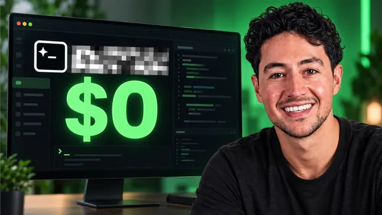

돈 한 푼 안 내고 AI 에이전트 쓰는 법

원본 영상 보기 →
- 광고 기반 과금이 AI 접근성 격차를 좁힐 수 있어요
- 무료 챗봇 모델도 코딩 에이전트로 전환하면 가치가 달라져요
- 결과물의 완성도보다 "누구나 접근 가능해졌다"는 구조 자체가 뉴스예요
한 줄 요약
"프리버프(Freebuff)"라는 신생 플랫폼은 신용카드 없이, 광고만 보면 GPT·GLM·딥시크 같은 프론티어 AI 코딩 에이전트를 하루 최대 20시간까지 공짜로 쓰게 해줍니다. Nick이 직접 사이트 제작과 게임 제작을 시켜 보며 이 "광고로 값을 치르는 AI 코딩" 모델이 실제로 쓸 만한지 확인해요.
전체 내용 정리
돈 대신 광고를 보는 AI 코딩 플랫폼이에요
오픈코드나 코덱스 같은 기존 AI 코딩 툴은 연간 120~240달러씩 구독료를 받죠. 프리버프는 다릅니다. 사용자가 화면 하단 광고를 보는 대가로 AI 에이전트 토큰을 완전히 무료로 제공해요.
Nick은 이 채널이 프리버프와 어떤 제휴도 없다고 먼저 밝히면서, 돈이 없는 사람도 AI 에이전트를 쓸 수 있게 됐다는 점이 흥미로워 소개한다고 설명합니다.
신용카드 등록이나 챗GPT 같은 별도 구독 없이 구글 계정만으로 가입이 가능하고, 맥용 데스크톱 앱을 내려받아 바로 시작할 수 있어요. 아이폰용 앱도 있어서 외출 중에도 같은 방식으로 코딩을 이어갈 수 있고요.
어떤 모델을 얼마나 쓸 수 있나요
제공하는 모델은 다양합니다.
| 모델 | 하루 무료 시간 | |---|---| | GPT 5.6 루나 | 5시간 | | 딥시크 V4.1 플래시 | 6시간 | | 뮤즈 스파크 1.2 | — | | GLM 5.3 플래시 | 최대 20시간 |
Nick이 예전에 벤치마크했던 GLM 5.3은 지능 점수 45점이에요. 클로드 페이블 5.1의 53점에는 못 미치지만 코딩 용도로는 충분히 쓸 만한 수준이라고 평가합니다. 딥시크 V4.1 플래시도 40점으로 GPT 6 아스트라(53점)에는 못 미치지만 준수한 편이고요.
특히 그가 "중요한 진전"이라고 강조하는 지점이 있어요. GPT 5.6 루나 같은 모델은 원래 챗봇으로만 무료로 쓸 수 있었는데, 프리버프 덕분에 이 모델로 실제 코드를 짜는 "빌드"까지 가능해졌다는 겁니다.
크레딧은 매일 자정에 리필돼요
프리버프의 과금 단위는 "프리벅스(Freebucks)"라는 하루치 무료 크레딧으로, 태평양시간 기준 매일 자정에 새로 채워집니다. 모아 뒀다 비싼 모델에 몰아 쓰거나, 매일 저렴한 모델만 골라 쓰는 것도 가능해요.
모델당 요금은 1시간 세션을 시작하는 순간 한 번만 차감되는 방식입니다. GLM 5.3 플래시는 시간당 5달러(=하루 20시간), GPT 5.6 루나는 시간당 20달러 상당으로 책정돼 있어요.
Nick은 가입 후 프로젝트 폴더 이름을 관행대로 "project"라 짓고, 화면 하단에 노출되는 광고(예: 반려견 사료 브랜드)를 직접 보여 주며 "과하게 방해되는 수준은 아니다"라고 평가합니다.
실전 테스트: 원페이지 사이트와 막대인간 게임
첫 테스트에서 GPT 5.6 루나에게 "Nick Saraev를 검색해서 멋있어 보이는 원페이지 사이트를 만들되 디자인이 과하지 않게 해 달라"고 요청했어요.
화면 우측에는 코드 변경 사항(diff), 파일 미리보기, 터미널까지 갖춘 제법 완성도 있는 IDE 인터페이스가 뜨고, 빌드 모드와 플랜 모드를 오갈 수 있는 기능도 확인됩니다.
이어서 두 번째 탭을 열어 GLM 5.3 플래시에게 "아주 단순한 막대인간 걷기 게임을 만들어 달라"고 요청했는데요. 원래 "탭 1개만 사용 가능"이라는 안내가 있었음에도 실제로는 동시에 두 세션을 돌리는 데 성공했습니다. 다만 두 에이전트를 동시에 실행하자 노트북이 뜨거워지고 팬 소음이 커졌다고 해요.
결과는 평범했지만, 그게 핵심이 아니에요
완성된 원페이지 사이트는 디자인과 카피라이팅 모두 평범한 수준이었고, 막대인간 게임도 캐릭터가 그냥 걷기만 하는 매우 기초적인 결과물이었다고 솔직하게 인정합니다.
그럼에도 그는 이번 영상의 핵심이 "결과물의 완성도"가 아니라 "돈 한 푼 없이, 신용카드 등록도 없이 프론티어급 AI 코딩 에이전트를 무제한에 가깝게 써 봤다는 사실 자체"라고 강조해요.
그는 지난 4년간 AI 에이전트 확산의 가장 큰 문제가 "프론티어 지능에는 큰 비용이 든다"는 점이었다고 지적합니다. 자신처럼 고가 모델을 마음껏 쓰는 사람과, 비용 때문에 "AI가 별로 안 좋다"고 느끼는 사람 사이의 격차를 프리버프 같은 서비스가 조금이나마 좁혀 줄 수 있다는 기대를 밝히며 마무리해요.
핵심 인사이트
- 광고 기반 과금이 AI 접근성 격차를 좁힐 수 있어요: 구독료가 부담스러운 사람들도 광고 시청만으로 고성능 모델을 하루 수십 시간씩 쓸 수 있게 되면서, "돈 있는 사람만 좋은 AI를 쓴다"는 구조에 균열이 생기고 있습니다.
- 무료 챗봇 모델도 코딩 에이전트로 전환하면 가치가 달라져요: GPT 5.6 루나처럼 원래 대화용으로만 무료였던 모델을, 프리버프는 실제 코드를 작성하고 실행하는 에이전트 용도로 열어 줘 같은 모델의 활용 범위를 넓혔습니다.
- 결과물의 완성도보다 "누구나 접근 가능해졌다"는 구조 자체가 뉴스예요: 이번에 만든 사이트와 게임은 품질이 뛰어나지 않았지만, 비용 장벽이 사라졌다는 사실만으로도 1인 사업자나 비개발자가 AI 실험을 시작해 볼 명분이 생깁니다.
오늘 당장 해볼 것
- 프리버프(freebuff.com)에 구글 계정으로 가입하고, 신용카드 등록 없이 하루 무료 크레딧으로 어떤 모델들을 쓸 수 있는지 직접 확인해 보세요.
- 맥이라면 데스크톱 앱을 내려받아 "내 소개 페이지를 간단하게 만들어 줘"처럼 쉬운 문장으로 한 페이지짜리 웹사이트 제작을 시켜 보세요. 평소 유료로 쓰던 도구와 결과물을 비교하면 감이 옵니다.
- 광고 시청형 무료 AI 도구를 업무에 도입하기 전에, 함께 일하는 개발 외주업체나 자동화 담당자에게 "이런 서비스도 검토해 볼 만한지" 물어보고 비용 절감 여지를 점검해 보세요.